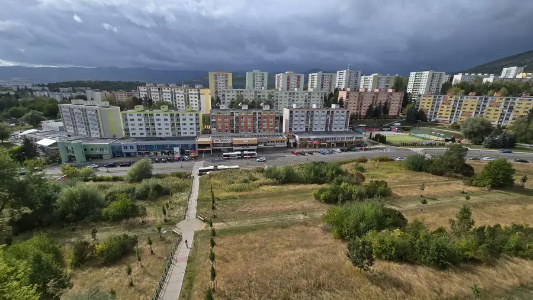
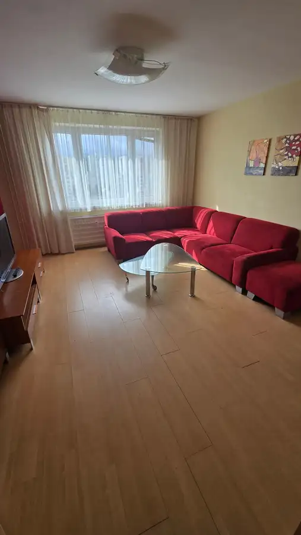
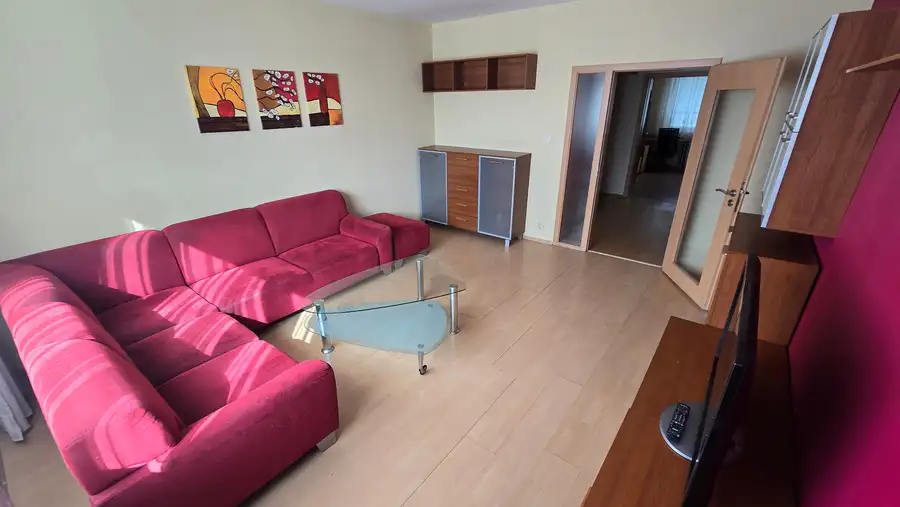
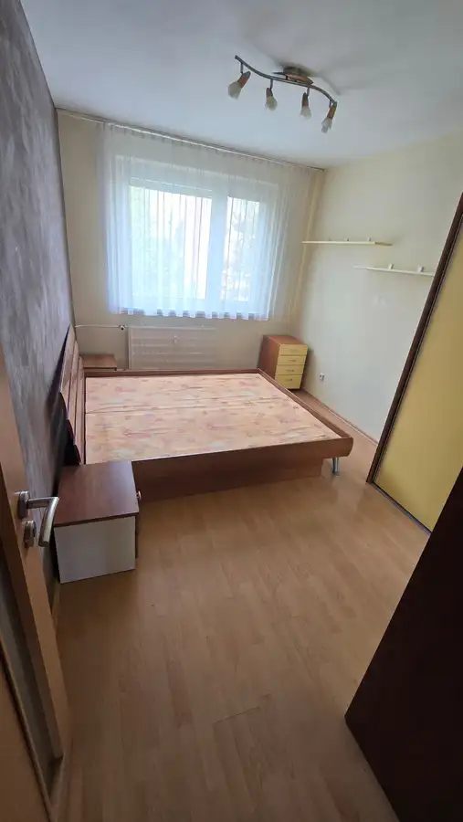

3 izbový byt Banská Bystrica
Banská Bystrica




- Dispozícia3-izbový
- Plocha70 m²
- Poschodie7. z 8
- StavČiastočná rekonštrukcia
- VlastníctvoOsobné
O nehnuteľnosti
MLreality exkluzívne ponúka na predaj 3 izbový byt v Banskej Bystrice na Starohorskej ulici. Byt s nádherným výhľadom o celkovej rozlohe 70 m2 sa nachádza na 7 z 8 poschodí s výťahom. Dispozícia pozostáva z priestrannej obývačky, spálne a tretej izby, kuchyne s výstupom do lodžie, veľkej vstupnej chodby, murovaného jadra s kúpelňou a samostatnou toaletou. Byt prešiel dávnou rekonštrukciou, ale v súčasnej dobe je vhodný na rekonštrukciu podľa vlastných predstáv. Samozrejmosťou je prislúchajúca murovaná pivnica v suteréne. Bytový dom je zateplený a kompletne zrekonštruovaný, vrátane spoločných priestorov. Nachádza sa v jednej z pokojnejších častí sídliska, s množstvom zelene a detských ihrísk naokolo, v blízkosti všetko potrebné k spokojnému bývaniu vrátane skvelých susedov. Mesačné náklady pre 3 osoby sa pohybujú vo výške cca 180 EUR, orientovaný je na dve svetové strany V - Z. Fotografie sú reálne, nepoužívame žiadne úpravy ani AI k zavádzaniu klientov. V cene je zahrnutý kompletný právny a realitný servis.Obhliadku a ďalšie informácie si môžete dohodnúť na tel. čísle 0905 622 072 alebo cez e-mail: mlauner@mlreality.sk V prípade záujmu o kúpu nehnuteľnosti, Vám náš špecialista /0917 369 986/ bezplatne sprostredkuje a nastaví podmienky podľa vašich možností. Spolupracujeme so všetkými inštitúciami na Slovensku.PONÚKAME VÁM:- kvalitný servis a služby po celom Slovensku- nestrannosť pri obchode, férové jednanie a dohodnutie najlepšej ceny- poradíme Vám ako najlepšie predať či kúpiť nehnuteľnosť- obhliadky a nábor nehnuteľností zabezpečujeme školenými maklérmi- inzerujeme na TOP realitných portáloch- zmluvy garantované právnikom- odbornú pomoc a rady pri prevode nehnuteľnosti kupujúcemu/predávajúcemu
Parametre
- Cena vrátane energií
- Nie
- Druh
- 3 izbový byt
- Dátum zverejnenia
- 21. 09. 2026
- Energetický certifikát budovy
- nie je
- Energie
- 180
- Orientácia
- Východná, Západná
- Podlažie
- 7
- Počet izieb / miestností
- 3
- Počet lodžií
- 1
- Počet nadzemných podlaží
- 8
- Počet pivníc
- 1
- Počet spální
- 3
- Príprava teplej vody
- Súbežne s ÚK
- Rok poslednej rekonštrukcie
- 2026
- Stav nehnuteľnosti
- Čiastočná rekonštrukcia
- Typ
- Predaj
- Typ konštrukcie
- Zmiešaná
- Vlastníctvo
- Osobné
- Vybavenie
- Lodžia, Pivnica, Výťah
- Vykurovanie
- Ústredné
- Zariadenie
- Zariadené kompletne
- Zdroj tepla
- Teplo z kotolne
- Úžitková plocha
- 70 m²